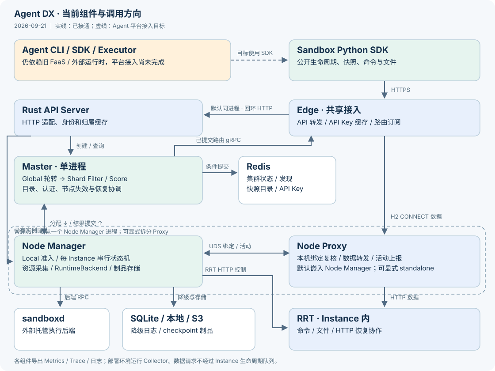

Agent DX 当前目录与组件边界
核对日期：2026-09-18。此页描述当前源码布局；首次导入记录保留在 迁移报告。HTML 阅读版 从本文件生成，架构图为仓库内 SVG。

分层与当前接入状态
| 层 | 职责 | 当前状态 |
|---|---|---|
Agent 产品 agent/ | Agent CLI、编程 SDK、会话和执行编排 | 已迁入；仍使用旧 FaaS/外部运行时。目标通过 Sandbox SDK 使用平台，业务后端迁移尚未完成 |
公开能力 platform/sdk/sandbox | Sandbox 生命周期、命令/文件、快照、放置约束 | Python SDK 已实现；客户端保留字段与新服务端支持范围不同 |
执行平台 platform/ | 通用 Instance、调度、持久化、节点生命周期、RRT | Rust API Server、本地优先创建及 EROFS/OCI 运行环境已接入；当前基础 K8s 八组已通过 |
共享接入 gateway/ | Edge、Node Proxy、反向代理与转发 | 独立 Rust crate、多二进制；Agent upstream 可按地址配置，业务规则仍归 Agent 层 |
Agent 使用新平台的目标边界是公开 Sandbox SDK，不直接访问平台 Redis/SQLite、内部调度 RPC 或 sandboxd。当前九条 /api/agent 兼容路由只负责认证与转发，需要配置 agent_address 和真正的 Agent 业务服务；默认部署不具备旧 CLI 的 meta_service/FaaS 接口。
实际目录
agent-dx/
├── Cargo.toml / Cargo.lock / rust-toolchain.toml
├── Makefile / build.sh / VERSION / pytest.ini
├── agent/
│ ├── cli/ar_cli/ # Python adx 命令
│ ├── sdk/python/src/adx/ # Agent 编程 SDK
│ ├── executor/src/adx/ # Agent Executor
│ └── tests/ # Agent 测试及外部运行时替身
├── platform/
│ ├── control-plane/
│ │ ├── master/ # Rust Master；Global + 内嵌 Shard
│ │ ├── node-manager/ # Rust 本机生命周期和后端/存储适配
│ │ └── api-server/ # Rust HTTP、认证缓存和 Instance RPC
│ │ ├── src/ # contract、http、clients、operations
│ │ ├── tests/ # HTTP 契约与校验
│ │ └── docs/ # Sandbox HTTP 支持范围
│ ├── crates/
│ │ ├── core/ # Instance、资源、恢复点、调度纯类型
│ │ ├── protocol/ # gRPC 生成、转换与组件身份
│ │ ├── discovery/ # Redis 服务地址发现
│ │ ├── service-runtime/ # 服务参数、配置读取与退出信号
│ │ ├── scheduling/ # Filter / Score、快照与查询索引
│ │ └── observability/ # Trace 初始化、传播与导出
│ ├── api/
│ │ ├── proto/instance.proto # Master / Node 管理服务
│ │ ├── proto/instance_types.proto # Instance / 资源 / 调度类型
│ │ ├── proto/snapshot.proto # 快照目录与引用
│ │ ├── proto/credentials.proto # 认证和密钥管理
│ │ ├── proto/routes.proto # 路由发布
│ │ ├── proto/node.proto # Node Proxy 绑定与活动
│ │ └── http/runtime-control.md
│ ├── runtime/rrt/ # HTTP 运行时与 checkpoint 协作
│ ├── deployment/ # 统一 adxctl / supervisor；管理控制面和数据面进程
│ └── sdk/sandbox/python/ # adx-sandbox / adx_sandbox
├── gateway/src/
│ ├── common/ # 传输元数据、日志、资源与关闭辅助
│ ├── edge/ # 路由订阅、认证、连接池、反向代理
│ ├── node/ # NodeProxyService、绑定、活动、转发
│ └── bin/ # Edge、Node Proxy、forwarder
├── third_party/sandboxd/ # 锁定后端协议、来源与许可证
├── build/
│ ├── ci/ / images/ # 本地检查、镜像配方
│ ├── config/examples/ # 统一部署与组件 JSON 配置
│ ├── release/ # 二进制、RRT、SDK、Redis 汇总与验证
│ ├── e2e/ # 本地 Docker 公共 SDK 验收
│ │ ├── kubernetes/ # 基础 K8s 部署、证据与清理
│ │ ├── firecracker/ # 本地 FC；可选 K8s FC 驱动
│ │ └── example/ # 安装示例验收
│ ├── observability/ # 外部 Collector / Prometheus 示例
│ ├── docs/ # 架构页生成与文档检查
│ └── dev/ # 自动刷新本地进度页
├── .buildkite/ # 独立 build / images / K8s E2E 步骤
└── docs/ # 架构、部署、契约、验收和迁移记录此树只展示主要已存在路径。语言构建输出与测试证据放在 out/ 或显式外部缓存，build/ 保存源码脚本。运行时数据库、日志与 checkpoint 使用部署配置的数据目录。
控制面内部模块
| 组件 | 现有主要模块 | 职责 |
|---|---|---|
| Master | lib.rs、shard.rs、queue.rs、journal.rs | Global 轮转、Shard 内存队列、预留、增量调度视图；租户间轮转，租户内优先级/FIFO |
| Master | storage.rs、storage/、rpc.rs、rpc/ | Redis 条件提交、原子归属、目录、节点失效、快照克隆、共享恢复协调；不执行节点普通生命周期 |
| Master | auth.rs、routes.rs、metrics.rs | API Key 摘要、路由发布、集群指标 |
| Node Manager | controller.rs、controller/{lifecycle,monitor,snapshots}.rs | 每 Instance 串行任务、暂停/恢复/删除、空闲回收与重启 |
| Node Manager | sandboxd.rs、runtime_control.rs、readiness.rs | RuntimeBackend 适配；本地 EROFS／OCI image 环境；RRT HTTP 协作与就绪 |
| Node Manager | checkpoint.rs、checkpoint/ | 可扩展 CheckpointStore、本地/S3、缓存引用和远端孤儿回收 |
| Node Manager | journal.rs、reconciliation.rs | SQLite 故障降级日志与 Master 权威目录对账 |
| Node Manager | resources.rs、routes.rs、activity.rs、proxy.rs | 容量源/准入、绑定同步、活动采集、代理进程组合 |
| Rust API Server | contract.rs、http.rs、clients.rs、operations.rs | HTTP 兼容字段到 Instance RPC；认证、版本化实例目录订阅、入口节点轮转、直达节点、快照目录 |
core 不依赖 Redis/SQLite/tonic/sandboxd 客户端；protocol 不承载调度或状态机。Node Manager 可依赖 Gateway 的 node 库，Gateway 不依赖 Master/Node Manager 业务实现。Shard 当前与 Master 同进程。
默认创建经 Global 轮转进入 Shard Filter/Score。启用 create_mode=local_first 时，API Server 轮转可用入口节点，Node Manager 用同一 Admission 暂留资源，Master 原子确认唯一归属并同步中心账本；本地不满足时使用同一 Instance ID 回退 Shard。Master 向 API Server 首次全量、后续增量发布保留的实例目录，包括用于幂等生命周期结果的终态记录；已有实例操作命中本地目录后直达 Node Manager。
Node Manager / Node Proxy 进程组合
| 模式 | 配置与装配 | 共同契约 |
|---|---|---|
| embedded（默认） | Node Manager 省略 proxy_mode 或配置 proxy_mode=embedded，托管同一 NodeProxyService；Proxy 环境项放到 node-manager 服务 | 仍走同一 UDS 和完整绑定同步，不绕过版本/身份检查 |
| standalone | 两个 supervisor 服务；Node Manager 显式配置 proxy_mode=standalone | Node Manager 经受保护 UDS 控制 NodeProxyService |
Proxy 首次启动关闭实例准入，Node Manager 完成权威对账与全量绑定同步后开放。数据请求直接进入 Node Proxy，不经过 Instance 生命周期队列。共进程共享进程和 Tokio 执行器，故障域与分进程不同。详见 模式配置与验证。
协议与持久化
公开 HTTP 路由和请求响应由 Rust HTTP handler 定义，SDK 调用公开契约。目前没有仓库维护的 sandbox.yaml 或已接入的 OpenAPI 自动生成流水线。参考 HTTP 文档。
内部 gRPC 按 Instance、快照、凭证、路由及节点本地控制拆分，详见 协议目录。RRT 用户操作及运行时协作使用 HTTP，类型在 core/src/runtime.rs。
正常结果经 Master 写 Redis；SQLite 只在提交不可用时保存待补交结果。Journaled 不发布 Edge 路由。节点重启而 Master 不可用时等待对账，不从不完整日志重建目录。快照制品走独立的本地/S3 存储抽象。详见 节点契约。
构建、部署和验收
Rust 共用根 Cargo workspace，Python 独立打包；外部 sandboxd 按其锁定版本构建。adx 是 Agent CLI；adxctl 是平台运维 CLI，支持 validate/render/run/start/status/stop。统一发布包带控制面、Gateway、静态 RRT、Sandbox SDK、EROFS 运行环境和锁定 Redis；可选择外部 Redis，sandboxd 始终由部署环境托管。运行环境也可使用不可变 OCI image；自定义用户镜像从同一环境只读挂载 /__adx。
普通进程与 Pod 内都使用相同组件和 supervisor。Buildkite 先构建，再发布不可变镜像，最后独立执行 K8s 八组用例及清理。Buildkite #30 已验证 Rust API Server、本地优先创建及 OCI default/runtime-only/custom 三种环境路径；两个 Pod 同宿主。本地 FC 与基础 K8s 分开统计，实际未完成项和后置项见 路线图。
可观测
Master/Node Manager 的实例数、资源预留与使用量，Edge/Node Proxy 的连接、流量与请求指标由各自 /metrics 导出。Trace 由组件 OpenTelemetry SDK 经 OTLP/HTTP 发往外部 Collector；结构化 stdout 由 supervisor 滚动压缩，Collector filelog 采集。Pod 可部署 Collector sidecar，进程环境独立托管。统一实时 Trace 队列丢弃指标已后置，不能与已有导出失败计数混同。